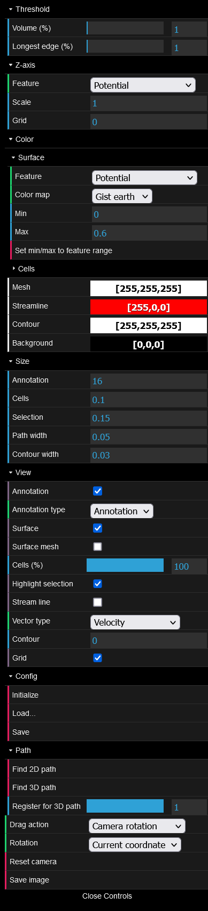
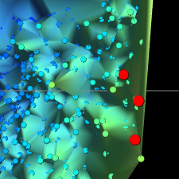

最終更新: 2022 年 8 月 26 日
CellMapViewer は、細胞地図の三次元での可視化のための Web プログラムです。CSV 形式の入力テキスト ファイルから座標や特徴量をもつ細胞の集合のデータを読み込ませると、Delaunay 三角形分割が行われ、その結果が可視化されます。
可視化後、GUI から次の操作が可能です。
また、GUI メニューから次に示す各種の設定が可能です。
加えて、選択中の細胞に関して、各細胞の情報や、細胞群の座標や特徴量の平均などの統計量が自動的に表示されます。

日本語版と英語版があります。
クリックすると入力ファイルを選択するダイアログが開きます。入力ファイルをドラッグ & ドロップすることも可能です。表示中のファイルがある場合、ファイル名がこのエリアの上に表示されます。
各種設定や操作を行います。[Threshold]、[Z-axis]、[Color]、[Size]、[View]、[Drag action]、[Reset settings] の詳細は「設定の変更」を、[Reset camera] の詳細は「視点の操作」を、[Find 2D (3D) path] の詳細は「経路の探索」を、[Save image] の詳細は「画像の保存」をご覧ください。[Close (Open) Controls] をクリックするとメニューを折りたたむ (開く) ことができます。
マウスによる操作が可能です。右下角 (Safari を除く) か下の水平線をドラッグすると縦幅を調整できます。詳細は「視点の操作」をご覧ください。
選択中の各細胞の情報や細胞集団の統計量が表示されます。右下をドラッグすると縦幅を調整できます。詳細は「選択中の細胞の情報の表示について」をご覧ください。
次の条件を満たしている必要があります。
満たしていない場合、読み込みエラーとなったり、正しく読み込めなかったり、読み込み後に文字化けしたりします。なお、空行や空白文字のみの行は読み込み時にスキップされます。
ファイル中の各列は列名により次のように解釈されます。
なお、大文字/小文字が違ったり、空白文字が存在していても同様に解釈されます。
ファイル選択エリアから入力ファイルを選択すると、現在の設定に基づいて自動で可視化が行われます。
[Color] > [Surface] で選択したカラー マップと特徴量の最大値と最小値が表示されます。
Delaunay 三角形分割の結果のうち、[Threshold] の設定で除去されるものを除いた三角形が描画されます。面の色は [Color] > [Surface] > [Feature] で指定した特徴量を [Color] > [Surface] > [Min]/[Max] の範囲内で [Color] > [Surface] > [Color map] で指定したカラー マップに対応させたものです。また、細胞を表す点は次の拡大時の図のように表示されます。

入力データに「Annotation」列が含まれる場合、各アノテーションに属する細胞集団の平均の位置にアノテーションのラベルが表示されます。クリックするとそのアノテーションに属する細胞をまとめて選択できます。Shift または Ctrl (Windows) もしくは Command (mac) キーを押しながらクリックすると、それまでの選択対象に追加されます。
次の図は展開した状態のメニューです。
以下、各設定項目について説明します。
三角形分割の三角形を除去する閾値を指定します。詳細は「可視化の仕様」をご覧ください。
細胞を表す点の z 座標に用いる特徴量を [Feature] で、スケールを [Scale] で指定します。
細胞地図の面の色を指定します。[Set min/max to feature range] ボタンから、[Min]/[Max] をそれぞれ [Feature] の最小値/最大値に設定できます。詳細は「可視化された細胞地図の見方」をご覧ください。
細胞地図表示エリアの背景色を指定するカラー ピッカーです。
細胞を表す点のサイズを指定します。
選択中の細胞を表す点のサイズを指定します。
経路の太さを指定します。
アノテーションのラベルの表示/非表示を切り替えます。
面の表示/非表示を切り替えます。
細胞を表す点の表示/非表示を切り替えます。
選択中の細胞を強調するかどうかを切り替えます。
細胞地図表示エリアでマウスの左ボタンを押しながらドラッグしたときの挙動を指定します。詳細は「視点の操作」および「ドラッグによる選択」をご覧ください。
以上の設定項目の全てを初期値に戻します。
細胞地図表示エリアでのマウス操作により、回転、ズーム、パンが可能です。最初の視点に戻すには、[Reset camera] をクリックします。
[Drag action] が [Camera rotation] のときに限り、マウスの左ボタンを押しながらドラッグすることで視点を回転できます。
ホイールによるスクロールでズーム イン/アウトができます。
マウスの右ボタンを押しながらドラッグすることで視点を画面と平行に移動できます。
クリックやドラッグにより細胞の選択が可能です。選択された細胞は次の図のように赤く強調表示されます。
細胞を表す点をクリックすると、その細胞だけが選択された状態になります。Shift または Ctrl (Windows) もしくは Command (mac) キーを押しながらクリックすると、それまでの選択対象に加えて新たにクリックされた細胞が選択されます。
ドラッグすると、矩形の範囲内にある細胞が選択された状態になります (ただし、[Drag action] が [Rectangle selection] のときに限ります)。Shift または Ctrl (Windows) もしくは Command (mac) キーを押しながらドラッグすると、それまでの選択対象に加えて新たに矩形の範囲内の細胞が選択されます。
1 つのアノテーションに属する細胞をまとめて選択することができます。方法は「アノテーション」をご覧ください。
選択中の細胞の情報が選択中の細胞の情報に表として表示されます。入力データ中に存在していた座標や特徴量などの情報が 1 細胞につき 1 行表示されるほか、表の最後に Mean (平均)、Variance (分散)、SD (標準偏差)、CV (変動係数) といった統計量が表示されます。
点 (細胞) を 2 個選択した状態から、その 2 点間を結ぶ最短経路を探索することができます。探索対象は現在表示されている辺です。距離として xy 平面上でのユークリッド距離が用いられます。経路が見つかった場合、経路が赤い線で表示され、経路上にある細胞が選択された状態になります。経路が見つからなかった場合、その旨がダイアログで通知されます。
[Find 2D path] をクリックすると実行されます。x、y 座標のみを考慮した探索が行われます。
[Find 3D path] をクリックすると実行されます。経路上で z 座標が広義単調減少もしくは広義単調増加する経路のみが探索されます。
[Save image] をクリックすると細胞地図表示エリアの画像を PNG 形式で保存できます。ただしメニューは出力されません。